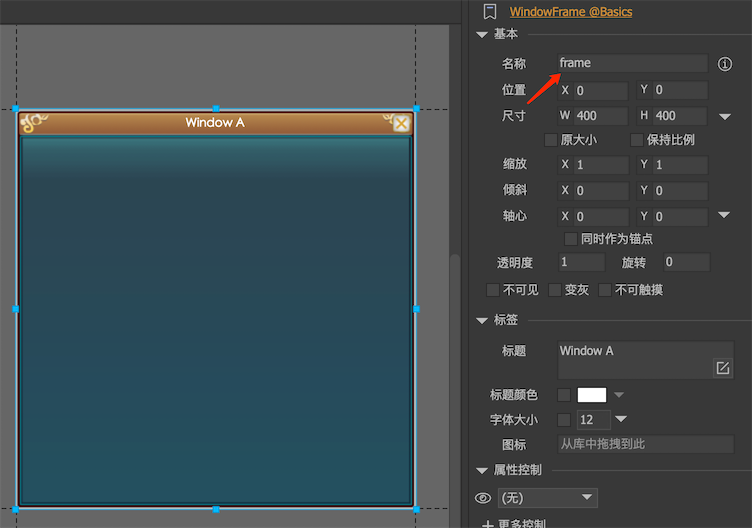

窗口系统
窗口是组件的一种特殊扩展。编辑器内并没有窗口的概念，因为窗口可以设置任意组件作为它的显示内容。窗口=内容组件+窗口管理API。
设计窗口
窗口内容组件需要在编辑器编辑好。通常窗口会包括一个可用于拖动的标题栏，关闭按钮等。FairyGUI使用约定名称将一些常见的窗口功能和我们定义的组件关联起来。首先，窗口内容组件内需要放置一个名称为frame的组件，这个组件将作为窗口的背景，或者成为框架。这个组件的的扩展通常选择为“标签”。

这个frame组件的制作方式为：
closeButton一个名称为closeButton的按钮将自动作为窗口的关闭按钮。dragArea一个名称为dragArea的图形（类型设置为空白）将自动作为窗口的检测拖动区域，当用户在此区域内按住并拖动时，窗口随之被拖动。contentArea一个名称为contentArea的图形（类型设置为空白）将作为窗口的主要内容区域，这个区域只用于ShowModalWait。当调用ShowModalWait时，窗口会被锁定，如果设定了contentArea，则只锁定contentArea指定的区域，否则锁定整个窗口。如果你希望窗口在modalWait状态下依然能够拖动和关闭，那么就不要让contentArea覆盖标题栏区域。
注意以上的约定均为可选，是否含有组件frame，或者组件frame里是否含有约定的功能组件，并不会影响窗口的正常显示和关闭。
使用窗口
内容组件制作好后，运行时就可以使用以下的方式创建和使用窗口：
Window win = new Window(); |
另外，FairyGUI还提供了一套机制用于窗口动态创建。动态创建是指初始时仅指定窗口需要使用的资源，等窗口需要显示时才实际开始构建窗口的内容。首先需要在窗口的构造函数中调用AddUISource。这个方法需要一个IUISource类型的参数，而IUISource是一个接口，用户需要自行实现载入相关UI包的逻辑。当窗口第一次显示之前，IUISource的加载方法将会被调用，并等待载入完成后才返回执行OnInit，然后窗口才会显示。
调用Show显示窗口的流程：

如果你需要窗口显示时播放动画效果，那么覆盖DoShowAnimation编写你的动画代码，并且在动画结束后调用onShown。
覆盖OnShown编写其他需要在窗口显示时处理的业务逻辑。
调用Hide隐藏窗口的流程：

如果你需要窗口隐藏时播放动画效果，那么覆盖DoHideAnimation编写你的动画代码，并且在动画结束时调用HideImmediately（注意不是直接调用onHide！）。
覆盖OnHide编写其他需要在窗口隐藏时处理的业务逻辑。
Window
Show显示窗口。Hide隐藏窗口。窗口并不会销毁，只是隐藏。isShowing获取窗口是否显示。modal设置窗口是否模态窗口。模态窗口将阻止用户点击任何模态窗口后面的内容。当模态窗口显示时，模态窗口背后可以自动覆盖一层灰色的颜色，这个颜色可以自定义：//Unity
UIConfig.modalLayerColor = new Color(0f, 0f, 0f, 0.4f);
//AS3
UIConfig.modalLayerColor = 0x333333;
UIConfig.modalLayerAlpha = 0.2;如果你不需要这个灰色效果，那么把透明度设置为0即可。
ShowModalWait锁定窗口，不允许任何操作。锁定时可以显示一个提示，这个提示的资源由下面的设置指定：UIConfig.windowModalWaiting = "ui://包名/组件名";
这个组件会调整和contentArea相同的大小。
CloseModalWait取消窗口的锁定。
窗口管理
GRoot里提供了一些窗口管理的常用API。
BringToFront把窗口提到所有窗口的最前面。CloseAllWindows隐藏所有窗口。注意不是销毁。CloseAllExceptModals隐藏所有非模态窗口。GetTopWindow返回当前显示在最上面的窗口。hasModalWindow当前是否有模态窗口在显示。
直接加组件到GRoot，和使用Window有什么区别？
GRoot是2D UI的根容器。当我们通过UIPackage.CreateObject创建出顶级UI界面后，将它添加到GRoot下。例如游戏的登录界面、主界面等，这类界面的特点是在游戏的底层，且比较固定。
Window的本质也是通过UIPackage.CreateObject动态创建的顶级UI界面，但它提供了常用的窗口特性，比如自动排序，显示/隐藏流程，模式窗口等。适用于游戏的对话框界面，例如人物状态、背包、商城之类。这类界面的特点是在游戏的上层，且切换频繁。
窗口自动排序
默认情况下，Window是具有点击自动排序功能的，也就是说，你点击一个窗口，系统会自动把窗口提到所有窗口的最前面，这也是所有窗口系统的规范。但你可以关闭这个功能：
UIConfig.bringWindowToFrontOnClick = false; |